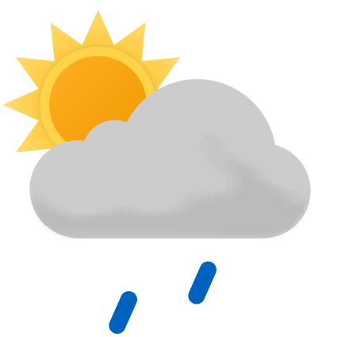

Min nettavis
Dette er et eksempel på en ingress. Ingresser er realtivt korte og fanger essensen i en artikkel i et par tre setninger. Du kan kopiere denne teksten og tilpasse størrelsen til ditt design.
Her skal du vise lenker til andre nettsteder. Du kan bruke følgende lenker:
Lag en overskrift, en kort introduksjonstekst og lag passende lenketekst for hver av lenkene og sett disse inn i en uordnet liste uten kulepunkter
Podkast
Markedsføring og forbrukaratferd
Digitalisering og enklare handel over landegrensene gjer at det stadig kjem nye aktørar til, og det gir ein tøffare konkurranse. Det er viktigare enn nokon gong å vite kva som påverkar forbrukaråtferd. Så kva er eigentleg det?
Været i dag:
| Dag | Formiddag | Ettermiddag | Kveld |
|---|---|---|---|
Fredag |
 |  |